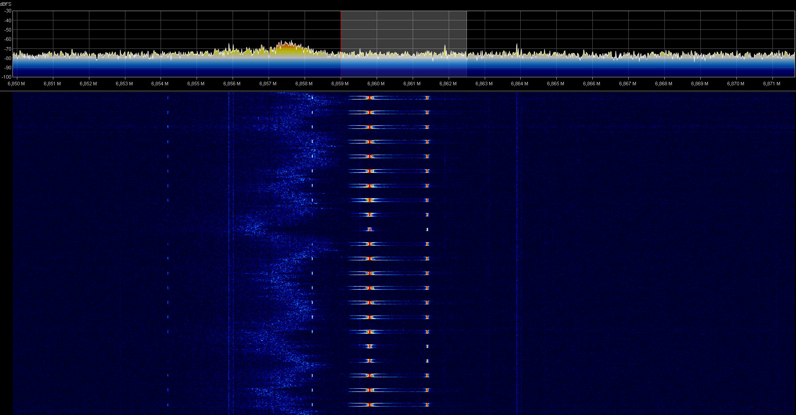
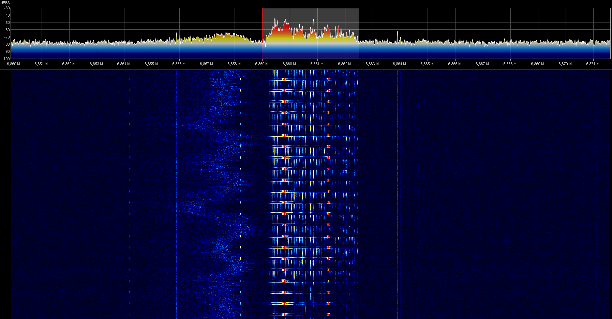
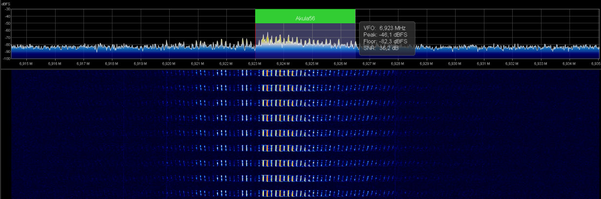
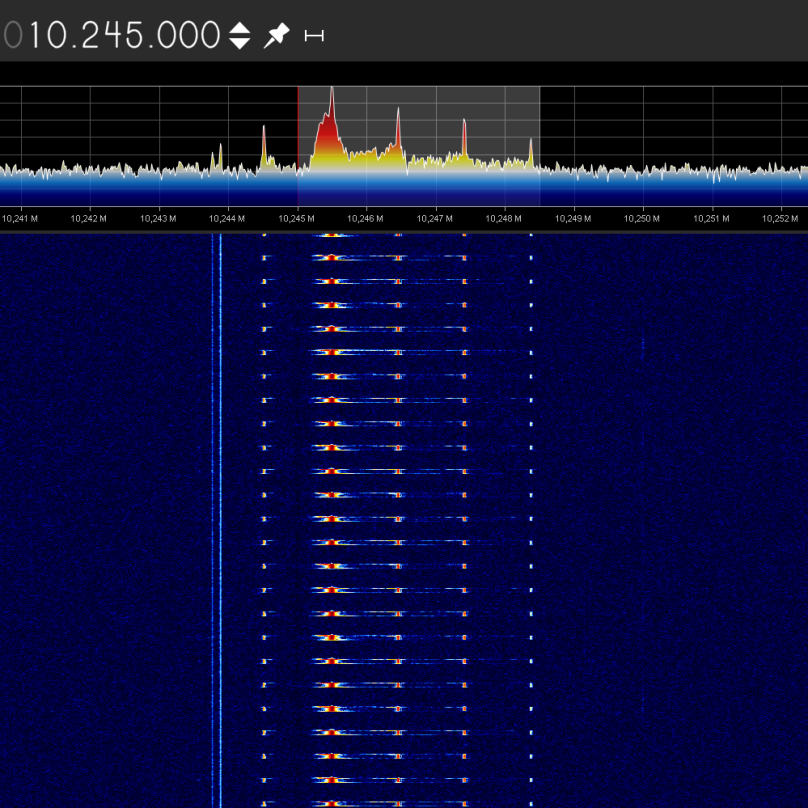
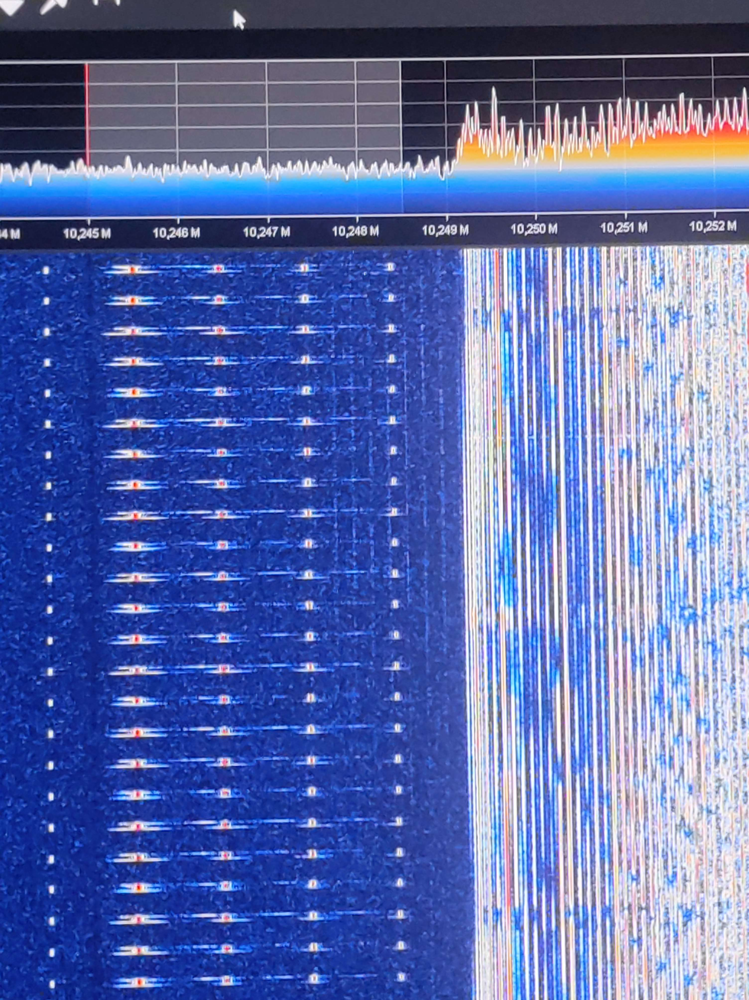
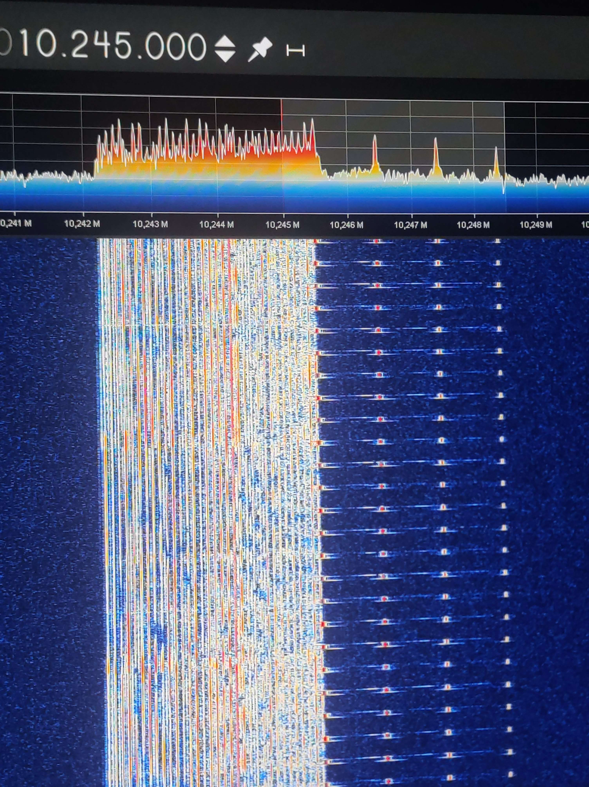

Click here to go back to the main page.
| Name: |
Akula56 Callsigns: Akula56 Recipient: 7GAT Signabroam ID: P6995 |
|---|---|
| Frequencies |
Active: 6890, 6923, 10245 Not always active: 5285, 6995, 8285 Inactive: 4633, 6859, 7855 |
| Status | Active (occasionally, not 24/7) |
| Voice | Male (Live), Female (Recorded) |
| Mode | USB, LSB (3.5 kHz) |
| Location | Near Lille, France |
| Known counterpart stations | 7GAT |
| Description |
Akula56 is the callsign the station identify himself and is emitted from France. First heard in August 2025, It consists of voice messages in Russian, which are believed to be intended for a recipient with callsign 7GAT. The signal is known for its irregular transmission schedule and changing frequencies. Plus, this station emit in very low power and is very hard to receive, even in France. This station like said earlier consists of voice messages in Russian, which are believed to be intended for a recipient with callsign 7GAT. The message use Russian Monolitic format, here an exemple of a message catch the 22.05.2026: Акула56 33100 АНЛОГ 1147 2601 It also been heard for an hour on 4633 kHz the with the same Pip marker as The Pip from Russia. The station since discovered is changing a lot his markers,
This station is supposedly a very sophisticated Pirate station. |
| Media |
Picture of Akula56 800 Hz pip marker and second with hum intermodulation on 6859 kHz:   Picture of buzzer marker on 6923 kHz:  Picture of 480 Hz pip marker on 10245 kHz:  Hum experiments with voices (not recorded, mostly test counts with the Akula56 callsign (Ya, Akula56, 1 2 3 4 5 6 7 8 9 10, Priyom.)) on 10245 kHz with Russian CIS-12 in background:   This hum experiments was followed by a Russian monolith voice message: Акула56 33100 АНЛОГ 1147 2601, the message was transmitted on both frequencies of the pip and the hum, and after this, the station goes off... Footage of 5285 kHz marker breakdown and resumed with a Russian CIS-12 from the 27.04.2026: |